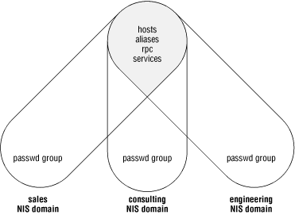

4.4. Managing multiple domains
A single NIS server may be a slave of more
than one master server, if it is
providing service to multiple domains. In addition, a server may be a
master for one domain and a slave of another. Multimaster
relationships are set up when NIS is installed on each of the master
servers. In the course of building the
ypservers
map, the slave servers handling multiple domains are named in the
ypservers map for each domain.
When multiple domains are used with independent NIS servers (each
serving only one domain), it is sometimes necessary to keep one or
more of the maps in these domains in perfect synchronization. Domains
with different password and group files, for example, might still
want to share global alias and host maps to simplify administration.
Adding a new user to either domain would make the user's mail
aliases appear in the global alias file, to be shared by both
domains.
Figure 4-1 shows three NIS domains that
share some maps and keep private copies of others.

Figure 4-1. Map sharing in multiple domains
The
hosts and
aliases maps
are shared
between
the NIS domains so that any changes to them are reflected on all NIS
clients in all domains. The
passwd and
group files
are managed on a per-domain basis so that
new users or groups in one domain do not automatically appear in the
other domains. This gives the system administrators fine control over
user access to machines and files in each NIS domain.
A much simpler case is the argument for having a single
/etc/rpc file and an
/etc/services file across all domains in an
organization. As locally developed or third-party software that
relies on these additional services is distributed to new networks,
the required configuration changes will be in place. This scenario is
most common when multiple NIS domains are run on a single network
with less than one system administrator per domain.
Sharing maps across domains involves setting up a master/slave
relationship between the two NIS master servers. The map transfer can
be done periodically out of
cron on the
"slave" master server, or the true master server for the
map can push the modified source file to the secondary master after
each modification. The latter method offers the advantages of keeping
the map source files synchronized and keeping the NIS maps current as
soon as changes are made, but it requires that the superuser have
remote execution permissions on the secondary NIS master server.
To force a source file to be pushed to
another domain, modify the NIS
Makefile to copy the source file to the
secondary master server, and rebuild the map there:
hosts.time:
....
rebuild hosts.byname and hosts.byaddr
@touch hosts.time;
@echo "updated hosts";
@if [ ! $(NOPUSH) ]; then $(YPPUSH) -d $(DOM) hosts.byname; fi
@if [ ! $(NOPUSH) ]; then $(YPPUSH) -d $(DOM) hosts.byaddr; fi
@if [ ! $(NOPUSH) ]; then echo "pushed hosts"; fi
@echo "copying hosts file to NIS server ono"
@rcp /etc/hosts ono:/etc/hosts
@echo "updating NIS maps on ono"
@rsh ono "( cd /var/yp; make hosts )"
The commands in the
Makefile are preceded by at
signs (
@) to suppress command echo when
make is executing them.
rcp
moves the file over to the secondary master server, and the script
invoked by
rsh rebuilds the maps on server
ono.
Superuser privileges are not always extended from one NIS server to
another, and this scheme works only if the
rsh
and
rcp commands can be executed. In order to
get the maps copied to the secondary master server, you need to be
able to access that server as
root. You might
justifiably be concerned about the security implications, since the
rcp and
rsh commands work
without password prompts. One alternative is to leave the source
files out-of-date and simply move the map file to the secondary
master and have it distributed to slave servers in the second domain.
Another alternative is to use Kerberos V5 versions of
rcp and
rsh or to use the
secure shell (
ssh). Kerberos V5 and
ssh are available as free software or in
commercial form. Your vendor might even provide one or both. For
Solaris 2.6 and upward, you can get the Sun Enterprise Authentication
Mechanism (SEAM) product from Sun, which has Kerberos V5, including
rcp and
rsh using Kerberos
V5 security (see
Section 12.5.5.2, "SEAM: Kerberos V5 for Solaris"). If you use SEAM,
you'll want to prefix
rcp and
rsh in the Makefile with
/usr/krb5/bin/.
The following script can be run out of
cron on
the secondary master server to pick up the host maps from NIS server
mahimahi, the master server for domain
nesales:
#! /bin/sh
/usr/lib/netsvc/yp/ypxfr -h mahimahi -s nesales hosts.byname
/usr/lib/netsvc/yp/ypxfr -h mahimahi -s nesales hosts.byaddr
/usr/lib/netsvc/yp/yppush -d `domainname` hosts.byname
/usr/lib/netsvc/yp/yppush -d `domainname` hosts.byaddr
The
ypxfr commands get the maps from the primary
master server, and then the
yppush commands
distribute them in the local, secondary NIS domain. The
-h option to
ypxfr
specifies the hostname from which to initiate the transfer, and
overrides the map's master record. The
-s
option indicates the domain from which the map is to be taken. Note
that in this approach, the hosts map points to
mahimahi as the master in
both domains. If the
rcp-based transfer is used, then the hosts map
in each domain points to the master server in that domain. The master
server record in the map always indicates
the host containing a
source file from which the map
can be
rebuilt.
 |  |  |
| 4.3. Advanced NIS server administration |  | 5. Living with Multiple Directory Servers |